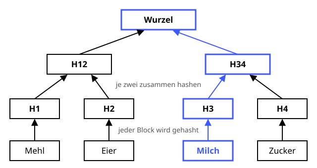

Merkle-Baum
Schutzziele: Integrität
Ein Stammbaum aus Fingerabdrücken – ein Krümel unten ändert die ganze Krone.
Definition
Ein Merkle-Baum (Ralph Merkle, 1979) fasst viele Datenblöcke zu einem einzigen Hash zusammen, dem Wurzel-Hash. Jeder Block wird gehasht, dann werden immer zwei Hashes aneinandergehängt und erneut gehasht – so lange, bis nur noch einer übrig ist. Kennt man den Wurzel-Hash aus einer vertrauenswürdigen Quelle, kann man jeden einzelnen Block prüfen, ohne alle anderen herunterzuladen.
Zutaten
- Mehrere Datenblöcke (Dateien, Transaktionen, Download-Stücke)
- Eine Hashfunktion, z. B. SHA-256
- Ein vertrauenswürdiger Wurzel-Hash
Zubereitung
- Jeden Datenblock einzeln hashen – das sind die Blätter des Baums.
- Immer zwei benachbarte Hashes aneinanderhängen und das Ergebnis wieder hashen.
- Ebene für Ebene wiederholen, bis nur noch ein Hash übrig ist: die Wurzel.
- Die Wurzel veröffentlichen oder signieren.
- Zum Prüfen eines einzelnen Blocks braucht man nur die Nachbar-Hashes auf dem Weg zur Wurzel (Merkle-Beweis) – bei einer Million Blöcken sind das nur 20 Hashes.
Skizze

Ändert sich ein Block (blau), ändern sich alle Hashes auf seinem Weg nach oben – bis zur Wurzel.
Skizze erstellt von Claude (KI)
Demo
Platzhalter für die Demo
Tipps
- Git arbeitet so: Ein Commit-Hash fasst über einen Hash-Baum alle Dateien und Ordner zusammen.
- Bei Bitcoin steht die Merkle-Wurzel aller Transaktionen im Blockkopf.
- BitTorrent und IPFS prüfen jedes heruntergeladene Stück einzeln gegen den Baum.
- Auch die Certificate-Transparency-Logs für Zertifikate sind Merkle-Bäume.
- Der Baum ist nur so vertrauenswürdig wie seine Wurzel – sie muss z. B. signiert sein.